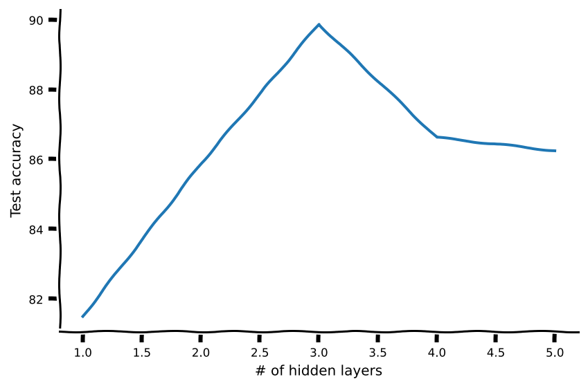
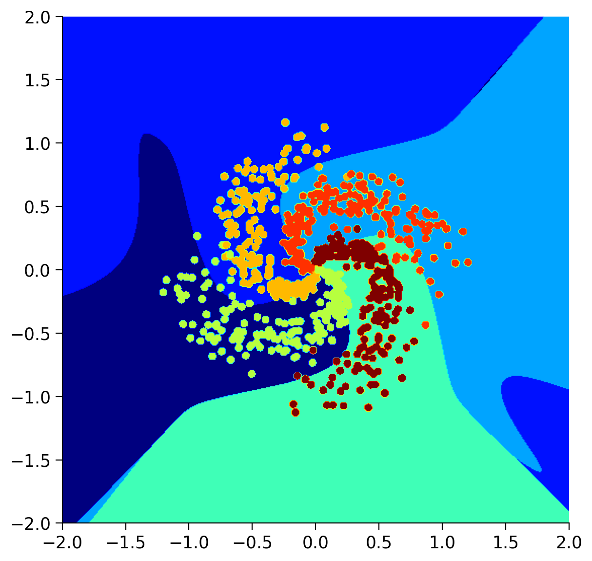
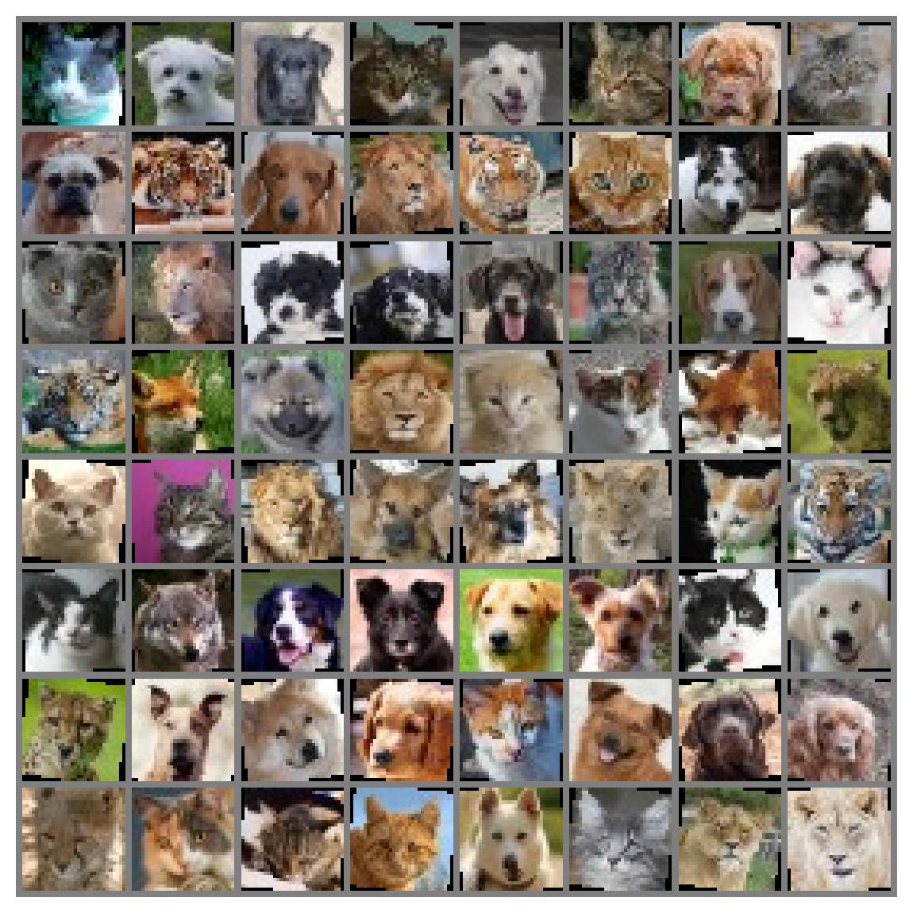

Tutorial 2: Deep MLPs
Contents


Tutorial 2: Deep MLPs¶
Week 1, Day 3: Multi Layer Perceptrons
By Neuromatch Academy
Content creators: Arash Ash, Surya Ganguli
Content reviewers: Saeed Salehi, Felix Bartsch, Yu-Fang Yang, Melvin Selim Atay, Kelson Shilling-Scrivo
Content editors: Gagana B, Kelson Shilling-Scrivo, Spiros Chavlis
Production editors: Anoop Kulkarni, Kelson Shilling-Scrivo, Gagana B, Spiros Chavlis

Tutorial Objectives¶
In this tutorial, we will dive deeper into MLPs and see more of their mathematical and practical aspects. Today we are going to see why MLPs:
Can be deep or wide
Dependant on transfer functions
Sensitive to initialization
Setup¶
This is a GPU free notebook!
Install dependencies¶
# @title Install dependencies
!pip install git+https://github.com/NeuromatchAcademy/evaltools --quiet
from evaltools.airtable import AirtableForm
atform = AirtableForm('appn7VdPRseSoMXEG','W1D3_T2','https://portal.neuromatchacademy.org/api/redirect/to/3c25f915-2a3c-4c6c-8200-3084c0de1924')
# Imports
import pathlib
import torch
import numpy as np
import matplotlib.pyplot as plt
import torch.nn as nn
import torch.optim as optim
from torchvision.utils import make_grid
import torchvision.transforms as transforms
from torchvision.datasets import ImageFolder
from torch.utils.data import DataLoader, TensorDataset
from tqdm.auto import tqdm
from IPython.display import display
Figure Settings¶
# @title Figure Settings
import ipywidgets as widgets # Interactive display
%config InlineBackend.figure_format = 'retina'
plt.style.use("https://raw.githubusercontent.com/NeuromatchAcademy/content-creation/main/nma.mplstyle")
my_layout = widgets.Layout()
Helper functions (MLP Tutorial 1 Codes)¶
# @title Helper functions (MLP Tutorial 1 Codes)
# @markdown `Net(nn.Module)`
class Net(nn.Module):
"""
Simulate MLP Network
"""
def __init__(self, actv, input_feature_num, hidden_unit_nums, output_feature_num):
"""
Initialize MLP Network parameters
Args:
actv: string
Activation function
input_feature_num: int
Number of input features
hidden_unit_nums: int
Number of units in the hidden layer
output_feature_num: int
Number of output features
Returns:
Nothing
"""
super(Net, self).__init__()
self.input_feature_num = input_feature_num # Save the input size for reshapinng later
self.mlp = nn.Sequential() # Initialize layers of MLP
in_num = input_feature_num # Initialize the temporary input feature to each layer
for i in range(len(hidden_unit_nums)): # Loop over layers and create each one
out_num = hidden_unit_nums[i] # Assign the current layer hidden unit from list
layer = nn.Linear(in_num, out_num) # Use nn.Linear to define the layer
in_num = out_num # Assign next layer input using current layer output
self.mlp.add_module(f"Linear_{i}", layer) # Append layer to the model with a name
actv_layer = eval(f"nn.{actv}") # Assign activation function (eval allows us to instantiate object from string)
self.mlp.add_module(f"Activation_{i}", actv_layer) # Append activation to the model with a name
out_layer = nn.Linear(in_num, output_feature_num) # Create final layer
self.mlp.add_module('Output_Linear', out_layer) # Append the final layer
def forward(self, x):
"""
Simulate forward pass of MLP Network
Args:
x: torch.tensor
Input data
Returns:
logits: Instance of MLP
Forward pass of MLP
"""
# Reshape inputs to (batch_size, input_feature_num)
# Just in case the input vector is not 2D, like an image!
x = x.view(-1, self.input_feature_num)
logits = self.mlp(x) # forward pass of MLP
return logits
# @markdown `train_test_classification(net, criterion, optimizer, train_loader, test_loader, num_epochs=1, verbose=True, training_plot=False)`
def train_test_classification(net, criterion, optimizer, train_loader,
test_loader, num_epochs=1, verbose=True,
training_plot=False, device='cpu'):
"""
Accumulate training loss/Evaluate performance
Args:
net: Instance of Net class
Describes the model with ReLU activation, batch size 128
criterion: torch.nn type
Criterion combines LogSoftmax and NLLLoss in one single class.
optimizer: torch.optim type
Implements Adam algorithm.
train_loader: torch.utils.data type
Combines the train dataset and sampler, and provides an iterable over the given dataset.
test_loader: torch.utils.data type
Combines the test dataset and sampler, and provides an iterable over the given dataset.
num_epochs: int
Number of epochs [default: 1]
verbose: boolean
If True, print statistics
training_plot=False
If True, display training plot
device: string
CUDA/GPU if available, CPU otherwise
Returns:
Nothing
"""
net.to(device)
net.train()
training_losses = []
for epoch in tqdm(range(num_epochs)): # Loop over the dataset multiple times
running_loss = 0.0
for i, data in enumerate(train_loader, 0):
# Get the inputs; data is a list of [inputs, labels]
inputs, labels = data
inputs = inputs.to(device).float()
labels = labels.to(device).long()
# Zero the parameter gradients
optimizer.zero_grad()
# forward + backward + optimize
outputs = net(inputs)
loss = criterion(outputs, labels)
loss.backward()
optimizer.step()
# Print statistics
if verbose:
training_losses += [loss.item()]
net.eval()
def test(data_loader):
"""
Function to gauge network performance
Args:
data_loader: torch.utils.data type
Combines the test dataset and sampler, and provides an iterable over the given dataset.
Returns:
acc: float
Performance of the network
total: int
Number of datapoints in the dataloader
"""
correct = 0
total = 0
for data in data_loader:
inputs, labels = data
inputs = inputs.to(device).float()
labels = labels.to(device).long()
outputs = net(inputs)
_, predicted = torch.max(outputs, 1)
total += labels.size(0)
correct += (predicted == labels).sum().item()
acc = 100 * correct / total
return total, acc
train_total, train_acc = test(train_loader)
test_total, test_acc = test(test_loader)
if verbose:
print(f'\nAccuracy on the {train_total} training samples: {train_acc:0.2f}')
print(f'Accuracy on the {test_total} testing samples: {test_acc:0.2f}\n')
if training_plot:
plt.plot(training_losses)
plt.xlabel('Batch')
plt.ylabel('Training loss')
plt.show()
return train_acc, test_acc
# @markdown `shuffle_and_split_data(X, y, seed)`
def shuffle_and_split_data(X, y, seed):
"""
Helper function to shuffle and split data
Args:
X: torch.tensor
Input data
y: torch.tensor
Corresponding target variables
seed: int
Set seed for reproducibility
Returns:
X_test: torch.tensor
Test data [20% of X]
y_test: torch.tensor
Labels corresponding to above mentioned test data
X_train: torch.tensor
Train data [80% of X]
y_train: torch.tensor
Labels corresponding to above mentioned train data
"""
# Set seed for reproducibility
torch.manual_seed(seed)
# Number of samples
N = X.shape[0]
# Shuffle data
shuffled_indices = torch.randperm(N) # Get indices to shuffle data, could use torch.randperm
X = X[shuffled_indices]
y = y[shuffled_indices]
# Split data into train/test
test_size = int(0.2 * N) # Assign test datset size using 20% of samples
X_test = X[:test_size]
y_test = y[:test_size]
X_train = X[test_size:]
y_train = y[test_size:]
return X_test, y_test, X_train, y_train
Plotting functions¶
# @title Plotting functions
def imshow(img):
"""
Helper function to plot unnormalised image
Args:
img: torch.tensor
Image to be displayed
Returns:
Nothing
"""
img = img / 2 + 0.5 # Unnormalize
npimg = img.numpy()
plt.imshow(np.transpose(npimg, (1, 2, 0)))
plt.axis(False)
plt.show()
def sample_grid(M=500, x_max=2.0):
"""
Helper function to simulate sample meshgrid
Args:
M: int
Size of the constructed tensor with meshgrid
x_max: float
Defines range for the set of points
Returns:
X_all: torch.tensor
Concatenated meshgrid tensor
"""
ii, jj = torch.meshgrid(torch.linspace(-x_max, x_max,M),
torch.linspace(-x_max, x_max, M))
X_all = torch.cat([ii.unsqueeze(-1),
jj.unsqueeze(-1)],
dim=-1).view(-1, 2)
return X_all
def plot_decision_map(X_all, y_pred, X_test, y_test,
M=500, x_max=2.0, eps=1e-3):
"""
Helper function to plot decision map
Args:
X_all: torch.tensor
Concatenated meshgrid tensor
y_pred: torch.tensor
Labels predicted by the network
X_test: torch.tensor
Test data
y_test: torch.tensor
Labels of the test data
M: int
Size of the constructed tensor with meshgrid
x_max: float
Defines range for the set of points
eps: float
Decision threshold
Returns:
Nothing
"""
decision_map = torch.argmax(y_pred, dim=1)
for i in range(len(X_test)):
indeces = (X_all[:, 0] - X_test[i, 0])**2 + (X_all[:, 1] - X_test[i, 1])**2 < eps # [TO-DO]
decision_map[indeces] = (K + y_test[i]).long()
decision_map = decision_map.view(M, M).cpu()
plt.imshow(decision_map, extent=[-x_max, x_max, -x_max, x_max], cmap='jet')
plt.plot()
Set random seed¶
Executing set_seed(seed=seed) you are setting the seed
# @title Set random seed
# @markdown Executing `set_seed(seed=seed)` you are setting the seed
# For DL its critical to set the random seed so that students can have a
# baseline to compare their results to expected results.
# Read more here: https://pytorch.org/docs/stable/notes/randomness.html
# Call `set_seed` function in the exercises to ensure reproducibility.
import random
import torch
def set_seed(seed=None, seed_torch=True):
"""
Function that controls randomness. NumPy and random modules must be imported.
Args:
seed : Integer
A non-negative integer that defines the random state. Default is `None`.
seed_torch : Boolean
If `True` sets the random seed for pytorch tensors, so pytorch module
must be imported. Default is `True`.
Returns:
Nothing.
"""
if seed is None:
seed = np.random.choice(2 ** 32)
random.seed(seed)
np.random.seed(seed)
if seed_torch:
torch.manual_seed(seed)
torch.cuda.manual_seed_all(seed)
torch.cuda.manual_seed(seed)
torch.backends.cudnn.benchmark = False
torch.backends.cudnn.deterministic = True
print(f'Random seed {seed} has been set.')
# In case that `DataLoader` is used
def seed_worker(worker_id):
"""
DataLoader will reseed workers following randomness in
multi-process data loading algorithm.
Args:
worker_id: integer
ID of subprocess to seed. 0 means that
the data will be loaded in the main process
Refer: https://pytorch.org/docs/stable/data.html#data-loading-randomness for more details
Returns:
Nothing
"""
worker_seed = torch.initial_seed() % 2**32
np.random.seed(worker_seed)
random.seed(worker_seed)
Set device (GPU or CPU). Execute set_device()¶
# @title Set device (GPU or CPU). Execute `set_device()`
# especially if torch modules used.
# Inform the user if the notebook uses GPU or CPU.
def set_device():
"""
Set the device. CUDA if available, CPU otherwise
Args:
None
Returns:
Nothing
"""
device = "cuda" if torch.cuda.is_available() else "cpu"
if device != "cuda":
print("GPU is not enabled in this notebook. \n"
"If you want to enable it, in the menu under `Runtime` -> \n"
"`Hardware accelerator.` and select `GPU` from the dropdown menu")
else:
print("GPU is enabled in this notebook. \n"
"If you want to disable it, in the menu under `Runtime` -> \n"
"`Hardware accelerator.` and select `None` from the dropdown menu")
return device
SEED = 2021
set_seed(seed=SEED)
DEVICE = set_device()
Random seed 2021 has been set.
GPU is not enabled in this notebook.
If you want to enable it, in the menu under `Runtime` ->
`Hardware accelerator.` and select `GPU` from the dropdown menu
Download of the Animal Faces dataset¶
Animal faces consists of 16,130 32x32 images belonging to 3 classes
# @title Download of the Animal Faces dataset
# @markdown Animal faces consists of 16,130 32x32 images belonging to 3 classes
import requests, os
from zipfile import ZipFile
print("Start downloading and unzipping `AnimalFaces` dataset...")
name = 'AnimalFaces32x32'
fname = f"{name}.zip"
url = f"https://osf.io/kgfvj/download"
r = requests.get(url, allow_redirects=True)
with open(fname, 'wb') as fh:
fh.write(r.content)
with ZipFile(fname, 'r') as zfile:
zfile.extractall(f"./{name}")
if os.path.exists(fname):
os.remove(fname)
else:
print(f"The file {fname} does not exist")
os.chdir(name)
print("Download completed.")
Start downloading and unzipping `AnimalFaces` dataset...
Download completed.
Data Loader¶
Execute this cell!
# @title Data Loader
# @markdown Execute this cell!
K = 4
sigma = 0.4
N = 1000
t = torch.linspace(0, 1, N)
X = torch.zeros(K*N, 2)
y = torch.zeros(K*N)
for k in range(K):
X[k*N:(k+1)*N, 0] = t*(torch.sin(2*np.pi/K*(2*t+k)) + sigma**2*torch.randn(N)) # [TO-DO]
X[k*N:(k+1)*N, 1] = t*(torch.cos(2*np.pi/K*(2*t+k)) + sigma**2*torch.randn(N)) # [TO-DO]
y[k*N:(k+1)*N] = k
X_test, y_test, X_train, y_train = shuffle_and_split_data(X, y, seed=SEED)
# DataLoader with random seed
batch_size = 128
g_seed = torch.Generator()
g_seed.manual_seed(SEED)
test_data = TensorDataset(X_test, y_test)
test_loader = DataLoader(test_data, batch_size=batch_size,
shuffle=False, num_workers=0,
worker_init_fn=seed_worker,
generator=g_seed,
)
train_data = TensorDataset(X_train, y_train)
train_loader = DataLoader(train_data,
batch_size=batch_size,
drop_last=True,
shuffle=True,
worker_init_fn=seed_worker,
generator=g_seed,
)
Section 1: Wider vs deeper networks¶
Time estimate: ~45 mins
Video 1: Deep Expressivity¶
Coding Exercise 1: Wide vs. Deep while keeping number of parameters same¶
Let’s find the optimal number of hidden layers under a fixed number of parameters constraint!
But first, we need a model parameter counter. You could iterate over the model layers by calling .parameters() and then use .numel() to count the layer parameters. Also, you can use requires_grad attribute to make sure it’s a trainable parameter. E.g.,
x = torch.ones(10, 5, requires_grad=True)
After defining the counter function, we will step by step increase the depth and then iterate over the possible number of hidden units (assuming same for all hidden layers); then using our parameter counter choose the number of hidden units that results in overall close to max_par_count parameters.
def run_depth_optimizer(max_par_count, max_hidden_layer, device):
"""
Simulate Depth Optimizer
Args:
max_par_count: int
Maximum number of hidden units in layer of depth optimizer
max_hidden_layer: int
Maximum number of hidden layers within depth optimizer
device: string
CUDA/GPU if available, CPU otherwise
Returns:
hidden_layers: int
Number of hidden layers in depth optimizer
test_scores: list
Log of test scores
"""
####################################################################
# Fill in all missing code below (...),
# then remove or comment the line below to test your function
raise NotImplementedError("Define the depth optimizer function")
###################################################################
def count_parameters(model):
"""
Function to count model parameters
Args:
model: instance of Net class
MLP instance
Returns:
par_count: int
Number of parameters in network
"""
par_count = 0
for p in model.parameters():
if p.requires_grad:
par_count += ...
return par_count
# Number of hidden layers to try
hidden_layers = ...
# Test test score list
test_scores = []
for hidden_layer in hidden_layers:
# Initialize the hidden units in each hidden layer to be 1
hidden_units = np.ones(hidden_layer, dtype=np.int)
# Define the the with hidden units equal to 1
wide_net = Net('ReLU()', X_train.shape[1], hidden_units, K).to(device)
par_count = count_parameters(wide_net)
# Increment hidden_units and repeat until the par_count reaches the desired count
while par_count < max_par_count:
hidden_units += 1
wide_net = Net('ReLU()', X_train.shape[1], hidden_units, K).to(device)
par_count = ...
# Train it
criterion = nn.CrossEntropyLoss()
optimizer = optim.Adam(wide_net.parameters(), lr=1e-3)
_, test_acc = train_test_classification(wide_net, criterion, optimizer,
train_loader, test_loader,
num_epochs=100, device=device)
test_scores += [test_acc]
return hidden_layers, test_scores
# Add event to airtable
atform.add_event('Coding Exercise 1: Wide vs. Deep ')
set_seed(seed=SEED)
max_par_count = 100
max_hidden_layer = 5
## Uncomment below to test your function
# hidden_layers, test_scores = run_depth_optimizer(max_par_count, max_hidden_layer, DEVICE)
# plt.xlabel('# of hidden layers')
# plt.ylabel('Test accuracy')
# plt.plot(hidden_layers, test_scores)
# plt.show()
# to_remove solution
def run_depth_optimizer(max_par_count, max_hidden_layer, device):
"""
Simulate Depth Optimizer
Args:
max_par_count: int
Maximum number of hidden units in layer of depth optimizer
max_hidden_layer: int
Maximum number of hidden layers within depth optimizer
device: string
CUDA/GPU if available, CPU otherwise
Returns:
hidden_layers: int
Number of hidden layers in depth optimizer
test_scores: list
Log of test scores
"""
def count_parameters(model):
"""
Function to count model parameters
Args:
model: instance of Net class
MLP instance
Returns:
par_count: int
Number of parameters in network
"""
par_count = 0
for p in model.parameters():
if p.requires_grad:
par_count += p.numel()
return par_count
# Number of hidden layers to try
hidden_layers = range(1, max_hidden_layer+1)
# Test test score list
test_scores = []
for hidden_layer in hidden_layers:
# Initialize the hidden units in each hidden layer to be 1
hidden_units = np.ones(hidden_layer, dtype=np.int)
# Define the the with hidden units equal to 1
wide_net = Net('ReLU()', X_train.shape[1], hidden_units, K).to(device)
par_count = count_parameters(wide_net)
# Increment hidden_units and repeat until the par_count reaches the desired count
while par_count < max_par_count:
hidden_units += 1
wide_net = Net('ReLU()', X_train.shape[1], hidden_units, K).to(device)
par_count = count_parameters(wide_net)
# Train it
criterion = nn.CrossEntropyLoss()
optimizer = optim.Adam(wide_net.parameters(), lr=1e-3)
_, test_acc = train_test_classification(wide_net, criterion, optimizer,
train_loader, test_loader,
num_epochs=100, device=device)
test_scores += [test_acc]
return hidden_layers, test_scores
# Add event to airtable
atform.add_event('Coding Exercise 1: Wide vs. Deep ')
set_seed(seed=SEED)
max_par_count = 100
max_hidden_layer = 5
## Uncomment below to test your function
hidden_layers, test_scores = run_depth_optimizer(max_par_count, max_hidden_layer, DEVICE)
with plt.xkcd():
plt.xlabel('# of hidden layers')
plt.ylabel('Test accuracy')
plt.plot(hidden_layers, test_scores)
plt.show()
Random seed 2021 has been set.
Accuracy on the 3200 training samples: 81.59
Accuracy on the 800 testing samples: 81.50
Accuracy on the 3200 training samples: 85.03
Accuracy on the 800 testing samples: 85.88
Accuracy on the 3200 training samples: 89.97
Accuracy on the 800 testing samples: 89.88
Accuracy on the 3200 training samples: 85.28
Accuracy on the 800 testing samples: 86.62
Accuracy on the 3200 training samples: 86.25
Accuracy on the 800 testing samples: 86.12

Think! 1: Why the tradeoff?¶
Here we see that there is a particular number of hidden layers that is optimum. Why do you think increasing hidden layers after a certain point hurt in this scenario?
Student Response¶
# @title Student Response
from ipywidgets import widgets
text=widgets.Textarea(
value='Type answer here and Push submit',
placeholder='Type something',
description='',
disabled=False
)
button = widgets.Button(description="Submit!")
display(text,button)
def on_button_clicked(b):
atform.add_answer('q1' , text.value)
print("Submission successful!")
button.on_click(on_button_clicked)
# to_remove explanation
"""
Because the learnability becomes an issue i.e., specifically the vanishing gradients is a problem.
""";
Section 1.1: Where Wide Fails¶
Let’s use the same spiral dataset generated before with two features. And then add more polynomial features (which makes the first layer wider). And finally, train a single linear layer. We could use the same MLP network with no hidden layers (though it would not be called an MLP anymore!).
Note that we will add polynomial terms upto \(P=50\) which means that for every \(x_1^n x_2^m\) term, \(n+m\leq P\). Now it’s fun math exercise to prove why the total number of polynomial features upto \(P\) becomes,
Also, we don’t need the polynomial term with degree zero (which is the constatnt term) since nn.Linear layers have bias terms. Therefore we will have one fewer polynomial feature.
def run_poly_classification(poly_degree, device='cpu', seed=0):
"""
Helper function to run the above defined polynomial classifier
Args:
poly_degree: int
Degree of the polynomial
device: string
CUDA/GPU if available, CPU otherwise
seed: int
A non-negative integer that defines the random state. Default is 0.
Returns:
num_features: int
Number of features
"""
def make_poly_features(poly_degree, X):
"""
Function to define the number of polynomial features except the bias term
Args:
poly_degree: int
Degree of the polynomial
X: torch.tensor
Input data
Returns:
num_features: int
Number of features
poly_X: torch.tensor
Polynomial term
"""
num_features = (poly_degree + 1)*(poly_degree + 2) // 2 - 1
poly_X = torch.zeros((X.shape[0], num_features))
count = 0
for i in range(poly_degree+1):
for j in range(poly_degree+1):
# No need to add zero degree since model has biases
if j + i > 0:
if j + i <= poly_degree:
# Define the polynomial term
poly_X[:, count] = X[:, 0]**i * X [:, 1]**j
count += 1
return poly_X, num_features
poly_X_test, num_features = make_poly_features(poly_degree, X_test)
poly_X_train, _ = make_poly_features(poly_degree, X_train)
batch_size = 128
g_seed = torch.Generator()
g_seed.manual_seed(seed)
poly_test_data = TensorDataset(poly_X_test, y_test)
poly_test_loader = DataLoader(poly_test_data,
batch_size=batch_size,
shuffle=False,
num_workers=1,
worker_init_fn=seed_worker,
generator=g_seed)
poly_train_data = TensorDataset(poly_X_train, y_train)
poly_train_loader = DataLoader(poly_train_data,
batch_size=batch_size,
shuffle=True,
num_workers=1,
worker_init_fn=seed_worker,
generator=g_seed)
# Define a linear model using MLP class
poly_net = Net('ReLU()', num_features, [], K).to(device)
# Train it!
criterion = nn.CrossEntropyLoss()
optimizer = optim.Adam(poly_net.parameters(), lr=1e-3)
_, _ = train_test_classification(poly_net, criterion, optimizer,
poly_train_loader, poly_test_loader,
num_epochs=100, device=DEVICE)
# Test it
X_all = sample_grid().to(device)
poly_X_all, _ = make_poly_features(poly_degree, X_all)
y_pred = poly_net(poly_X_all.to(device))
# Plot it
plot_decision_map(X_all.cpu(), y_pred.cpu(), X_test.cpu(), y_test.cpu())
plt.show()
return num_features
set_seed(seed=SEED)
max_poly_degree = 50
num_features = run_poly_classification(max_poly_degree, DEVICE, SEED)
print(f'Number of features: {num_features}')
Random seed 2021 has been set.
Accuracy on the 3200 training samples: 69.88
Accuracy on the 800 testing samples: 72.62

Number of features: 1325
Think! 1.1: Does it generalize well?¶
Do you think this model is performing well outside its training distribution? Why?
Student Response¶
# @title Student Response
from ipywidgets import widgets
text=widgets.Textarea(
value='Type your answer here and click on `Submit!`',
placeholder='Type something',
description='',
disabled=False
)
button = widgets.Button(description="Submit!")
display(text,button)
def on_button_clicked(b):
atform.add_answer('q2', text.value)
print("Submission successful!")
button.on_click(on_button_clicked)
# to_remove explanation
"""
Absolutely not! It even started to form unconnected clusters outside of training distribution.
""";
Section 2: Deeper MLPs¶
Time estimate: ~55 mins
Video 2: Case study¶
Coding Exercise 2: Dataloader on a real-world dataset¶
Let’s build our first real-world dataset loader with Data Preprocessing and Augmentation! And we will use the Torchvision transforms to do it. We’d like to have a simple data augmentation with the following steps:
Random rotation with \(10\) degrees (
.RandomRotation)Random horizontal flipping (
.RandomHorizontalFlip) and we’d like a preprocessing that:makes Pytorch tensors in the range \([0, 1]\) (
.ToTensor)normalizes the input in the range \([-1, 1]\) (.
Normalize)
Hint: For more info on transform, see the official documentation.
def get_data_loaders(batch_size, seed):
"""
Helper function to get data loaders
Args:
batch_size: int
Batch size
seed: int
A non-negative integer that defines the random state.
Returns:
img_train_loader: torch.utils.data type
Combines the train dataset and sampler, and provides an iterable over the given dataset.
img_test_loader: torch.utils.data type
Combines the test dataset and sampler, and provides an iterable over the given dataset.
"""
####################################################################
# Fill in all missing code below (...),
# then remove or comment the line below to test your function
raise NotImplementedError("Define the get data loaders function")
###################################################################
# Define the transform done only during training
augmentation_transforms = ...
# Define the transform done in training and testing (after augmentation)
mean = (0.5, 0.5, 0.5) # defined sequence of means per channel
std = (0.5, 0.5, 0.5) # defined sequence of std deviations per channel
# Note that the transform should normalize each channel: output[channel] = (input[channel] - mean[channel]) / std[channel]
preprocessing_transforms = ...
# Compose them together
train_transform = transforms.Compose(augmentation_transforms + preprocessing_transforms)
test_transform = transforms.Compose(preprocessing_transforms)
# Using pathlib to be compatible with all OS's
data_path = pathlib.Path('.')/'afhq'
# Define the dataset objects (they can load one by one)
img_train_dataset = ImageFolder(data_path/'train', transform=train_transform)
img_test_dataset = ImageFolder(data_path/'val', transform=test_transform)
g_seed = torch.Generator()
g_seed.manual_seed(seed)
# Define the dataloader objects (they can load batch by batch)
img_train_loader = DataLoader(img_train_dataset,
batch_size=batch_size,
shuffle=True,
worker_init_fn=seed_worker,
generator=g_seed)
# num_workers can be set to higher if running on Colab Pro TPUs to speed up,
# with more than one worker, it will do multithreading to queue batches
img_test_loader = DataLoader(img_test_dataset,
batch_size=batch_size,
shuffle=False,
num_workers=1,
worker_init_fn=seed_worker,
generator=g_seed)
return img_train_loader, img_test_loader
# Add event to airtable
atform.add_event('Coding Exercise 2: Dataloader on a real-world dataset')
batch_size = 64
set_seed(seed=SEED)
## Uncomment below to test your function
# img_train_loader, img_test_loader = get_data_loaders(batch_size, SEED)
## get some random training images
# dataiter = iter(img_train_loader)
# images, labels = dataiter.next()
## show images
# imshow(make_grid(images, nrow=8))
# to_remove solution
def get_data_loaders(batch_size, seed):
"""
Helper function to get data loaders
Args:
batch_size: int
Batch size
seed: int
A non-negative integer that defines the random state.
Returns:
img_train_loader: torch.utils.data type
Combines the train dataset and sampler, and provides an iterable over the given dataset.
img_test_loader: torch.utils.data type
Combines the test dataset and sampler, and provides an iterable over the given dataset.
"""
# Define the transform done only during training
augmentation_transforms = [transforms.RandomRotation(10), transforms.RandomHorizontalFlip()]
# Define the transform done in training and testing (after augmentation)
mean = (0.5, 0.5, 0.5) # defined sequence of means per channel
std = (0.5, 0.5, 0.5) # defined sequence of std deviations per channel
# Note that the transform should normalize each channel: output[channel] = (input[channel] - mean[channel]) / std[channel]
preprocessing_transforms = [transforms.ToTensor(), transforms.Normalize(mean, std)]
# Compose them together
train_transform = transforms.Compose(augmentation_transforms + preprocessing_transforms)
test_transform = transforms.Compose(preprocessing_transforms)
# Using pathlib to be compatible with all OS's
data_path = pathlib.Path('.')/'afhq'
# Define the dataset objects (they can load one by one)
img_train_dataset = ImageFolder(data_path/'train', transform=train_transform)
img_test_dataset = ImageFolder(data_path/'val', transform=test_transform)
g_seed = torch.Generator()
g_seed.manual_seed(seed)
# Define the dataloader objects (they can load batch by batch)
img_train_loader = DataLoader(img_train_dataset,
batch_size=batch_size,
shuffle=True,
worker_init_fn=seed_worker,
generator=g_seed)
# num_workers can be set to higher if running on Colab Pro TPUs to speed up,
# with more than one worker, it will do multithreading to queue batches
img_test_loader = DataLoader(img_test_dataset,
batch_size=batch_size,
shuffle=False,
num_workers=1,
worker_init_fn=seed_worker,
generator=g_seed)
return img_train_loader, img_test_loader
# Add event to airtable
atform.add_event('Coding Exercise 2: Dataloader on a real-world dataset')
batch_size = 64
set_seed(seed=SEED)
## Uncomment below to test your function
img_train_loader, img_test_loader = get_data_loaders(batch_size, SEED)
## get some random training images
dataiter = iter(img_train_loader)
images, labels = dataiter.next()
## show images
imshow(make_grid(images, nrow=8))
Random seed 2021 has been set.

# Train it
set_seed(seed=SEED)
net = Net('ReLU()', 3*32*32, [64, 64, 64], 3).to(DEVICE)
criterion = nn.CrossEntropyLoss()
optimizer = optim.Adam(net.parameters(), lr=3e-4)
_, _ = train_test_classification(net, criterion, optimizer,
img_train_loader, img_test_loader,
num_epochs=30, device=DEVICE)
Random seed 2021 has been set.
---------------------------------------------------------------------------
KeyboardInterrupt Traceback (most recent call last)
/tmp/ipykernel_5697/70278562.py in <module>
6 _, _ = train_test_classification(net, criterion, optimizer,
7 img_train_loader, img_test_loader,
----> 8 num_epochs=30, device=DEVICE)
/tmp/ipykernel_5697/927545959.py in train_test_classification(net, criterion, optimizer, train_loader, test_loader, num_epochs, verbose, training_plot, device)
97 for epoch in tqdm(range(num_epochs)): # Loop over the dataset multiple times
98 running_loss = 0.0
---> 99 for i, data in enumerate(train_loader, 0):
100 # Get the inputs; data is a list of [inputs, labels]
101 inputs, labels = data
/opt/hostedtoolcache/Python/3.7.13/x64/lib/python3.7/site-packages/torch/utils/data/dataloader.py in __next__(self)
650 # TODO(https://github.com/pytorch/pytorch/issues/76750)
651 self._reset() # type: ignore[call-arg]
--> 652 data = self._next_data()
653 self._num_yielded += 1
654 if self._dataset_kind == _DatasetKind.Iterable and \
/opt/hostedtoolcache/Python/3.7.13/x64/lib/python3.7/site-packages/torch/utils/data/dataloader.py in _next_data(self)
690 def _next_data(self):
691 index = self._next_index() # may raise StopIteration
--> 692 data = self._dataset_fetcher.fetch(index) # may raise StopIteration
693 if self._pin_memory:
694 data = _utils.pin_memory.pin_memory(data, self._pin_memory_device)
/opt/hostedtoolcache/Python/3.7.13/x64/lib/python3.7/site-packages/torch/utils/data/_utils/fetch.py in fetch(self, possibly_batched_index)
47 def fetch(self, possibly_batched_index):
48 if self.auto_collation:
---> 49 data = [self.dataset[idx] for idx in possibly_batched_index]
50 else:
51 data = self.dataset[possibly_batched_index]
/opt/hostedtoolcache/Python/3.7.13/x64/lib/python3.7/site-packages/torch/utils/data/_utils/fetch.py in <listcomp>(.0)
47 def fetch(self, possibly_batched_index):
48 if self.auto_collation:
---> 49 data = [self.dataset[idx] for idx in possibly_batched_index]
50 else:
51 data = self.dataset[possibly_batched_index]
/opt/hostedtoolcache/Python/3.7.13/x64/lib/python3.7/site-packages/torchvision/datasets/folder.py in __getitem__(self, index)
230 sample = self.loader(path)
231 if self.transform is not None:
--> 232 sample = self.transform(sample)
233 if self.target_transform is not None:
234 target = self.target_transform(target)
/opt/hostedtoolcache/Python/3.7.13/x64/lib/python3.7/site-packages/torchvision/transforms/transforms.py in __call__(self, img)
92 def __call__(self, img):
93 for t in self.transforms:
---> 94 img = t(img)
95 return img
96
/opt/hostedtoolcache/Python/3.7.13/x64/lib/python3.7/site-packages/torchvision/transforms/transforms.py in __call__(self, pic)
132 Tensor: Converted image.
133 """
--> 134 return F.to_tensor(pic)
135
136 def __repr__(self) -> str:
/opt/hostedtoolcache/Python/3.7.13/x64/lib/python3.7/site-packages/torchvision/transforms/functional.py in to_tensor(pic)
166 if pic.mode == "1":
167 img = 255 * img
--> 168 img = img.view(pic.size[1], pic.size[0], len(pic.getbands()))
169 # put it from HWC to CHW format
170 img = img.permute((2, 0, 1)).contiguous()
KeyboardInterrupt:
# Visualize the feature map
fc1_weights = net.mlp[0].weight.view(64, 3, 32, 32).detach().cpu()
fc1_weights /= torch.max(torch.abs(fc1_weights))
imshow(make_grid(fc1_weights, nrow=8))
Think! 2: Why first layer features are high level?¶
Even though it’s three layers deep, we see distinct animal faces in the first layer feature map. Do you think this MLP has a hierarchical feature representation? Why?
Student Response¶
# @title Student Response
from ipywidgets import widgets
text=widgets.Textarea(
value='Type your answer here and click on `Submit!`',
placeholder='Type something',
description='',
disabled=False
)
button = widgets.Button(description="Submit!")
display(text,button)
def on_button_clicked(b):
atform.add_answer('q3', text.value)
print("Submission successful!")
button.on_click(on_button_clicked)
# to_remove explanation
"""
No, we don't see low-level features in the first layer (like edges or face parts).
This is because the MLP model does not have a preference (bias or prior)
for hierarchical feature maps; hence it won't learn it by default.
""";
Summary¶
In the second tutorial of this day, we have dived deeper into MLPs and seen more of their mathematical and practical aspects. More specifically, we have learned about different architectures, i.e., deep, wide, and how they are dependent on the transfer function used. Also, we have learned about the importance of initialization, and we mathematically analyzed two methods for smart initialization.
Video 4: Outro¶
Airtable Submission Link¶
# @title Airtable Submission Link
from IPython import display as IPydisplay
IPydisplay.HTML(
f"""
<div>
<a href= "{atform.url()}" target="_blank">
<img src="https://github.com/NeuromatchAcademy/course-content-dl/blob/main/tutorials/static/SurveyButton.png?raw=1"
alt="button link end of day Survey" style="width:410px"></a>
</div>""" )
Bonus: The need for good initialization¶
In this section, we derive principles for initializing deep networks. We will see that if the weights are too large, then the forward propagation of signals will be chaotic, and the backpropagation of error gradients will explode. On the other hand, if the weights are too small, the forward propagation of signals will be ordered, and the backpropagation of error gradients will vanish. The key idea behind initialization is to choose the weights to be just right, i.e., at the edge between order and chaos. In this section, we derive this edge and show how to compute the correct initial variance of the weights.
Many of the typical initialization schemes in existing deep learning frameworks implicitly employ this principle of initialization at the edge of chaos. So this section can be safely skipped on first pass and is, hence, a bonus section.
Video 5: Need for Good Initialization¶
Xavier initialization¶
Let us look at the scale distribution of an output (e.g., a hidden variable) \(o_i\) for some fully-connected layer without nonlinearities. With \(n_{in}\) inputs (\(x_j\)) and their associated weights \(w_{ij}\) for this layer. Then an output is given by,
The weights \(w_{ij}\) are all drawn independently from the same distribution. Furthermore, let us assume that this distribution has zero mean and variance \(\sigma^2\). Note that this does not mean that the distribution has to be Gaussian, just that the mean and variance need to exist. For now, let us assume that the inputs to the layer \(x_j\) also have zero mean and variance \(\gamma^2\) and that they are independent of \(w_{ij}\) and independent of each other. In this case, we can compute the mean and variance of \(o_i\) as follows:
One way to keep the variance fixed is to set \(n_{in}\sigma^2=1\) . Now consider backpropagation. There we face a similar problem, albeit with gradients being propagated from the layers closer to the output. Using the same reasoning as for forward propagation, we see that the gradients’ variance can blow up unless \(n_{out}\sigma^2=1\) , where \(n_{out}\) is the number of outputs of this layer. This leaves us in a dilemma: we cannot possibly satisfy both conditions simultaneously. Instead, we simply try to satisfy:
This is the reasoning underlying the now-standard and practically beneficial Xavier initialization, named after the first author of its creators Glorot and Bengio, 2010. Typically, the Xavier initialization samples weights from a Gaussian distribution with zero mean and variance \(\sigma^2=\frac{2}{(n_{in}+n_{out})}\),
We can also adapt Xavier’s intuition to choose the variance when sampling weights from a uniform distribution. Note that the uniform distribution \(\mathcal{U}(−a,a)\) has variance \(\frac{a^2}{3}\). Plugging this into our condition on \(\sigma^2\) yields the suggestion to initialize according to
This explanation is mainly taken from here.
If you want to see more about initializations and their differences see here.
Initialization with transfer function¶
Let’s derive the optimal gain for LeakyReLU following similar steps.
LeakyReLU is described mathematically:
where \(\alpha\) controls the angle of the negative slope.
Considering a single layer with this activation function gives,
where \(z_i\) denotes the activation of node \(i\).
The expectation of the output is still zero, i.e., \(\mathbb{E}[f(o_i)=0]\), but the variance changes, and assuming that the probability \(P(x < 0) = 0.5\), we have that:
where \(\gamma\) is the variance of the distribution of the inputs \(x_j\) and \(\sigma\) is the variance of the distribution of weights \(w_{ij}\), as before.
Therefore, following the rest of derivation as before,
As we can see from the derived formula of \(\sigma\), the transfer function we choose is related with the variance of the distribution of the weights. As the negative slope of the LeakyReLU \(\alpha\) becomes larger, the \(gain\) becomes smaller and thus, the distribution of the weights is narrower. On the other hand, as \(\alpha\) becomes smaller and smaller, the distribution of the weights is wider. Recall that, we initialize our weights, for example, by sampling from a normal distribution with zero mean and variance \(\sigma^2\).
Best gain for Xavier Initialization with Leaky ReLU¶
You’re probably running out of time, so let me explain what’s happening here. We derived a theoretical gain for initialization. But the question is whether it holds in practice? Here we have a setup to confirm our finding. We will try a range of gains and see the empirical optimum and whether it matches our theoretical value!
If you have time left, you can change the distribution to sample the initial weights from a uniform distribution. Comment out line 11 and uncomment line 12.
N = 10 # Number of trials
gains = np.linspace(1/N, 3.0, N)
test_accs = []
train_accs = []
mode = 'uniform'
for gain in gains:
print(f'\ngain: {gain}')
def init_weights(m, mode='normal'):
if type(m) == nn.Linear:
torch.nn.init.xavier_normal_(m.weight, gain)
# torch.nn.init.xavier_uniform_(m.weight, gain)
negative_slope = 0.1
actv = f'LeakyReLU({negative_slope})'
set_seed(seed=SEED)
net = Net(actv, 3*32*32, [128, 64, 32], 3).to(DEVICE)
net.apply(init_weights)
criterion = nn.CrossEntropyLoss()
optimizer = optim.SGD(net.parameters(), lr=1e-2)
train_acc, test_acc = train_test_classification(net, criterion, optimizer,
img_train_loader,
img_test_loader,
num_epochs=1,
verbose=True,
device=DEVICE)
test_accs += [test_acc]
train_accs += [train_acc]
best_gain = gains[np.argmax(train_accs)]
plt.plot(gains, test_accs, label='Test accuracy')
plt.plot(gains, train_accs, label='Train accuracy')
plt.scatter(best_gain, max(train_accs),
label=f'best gain={best_gain:.1f}',
c='k', marker ='x')
# Calculate and plot the theoretical gain
theoretical_gain = np.sqrt(2.0 / (1 + negative_slope ** 2))
plt.scatter(theoretical_gain, max(train_accs),
label=f'theoretical gain={theoretical_gain:.2f}',
c='g', marker ='x')
plt.legend()
plt.plot()